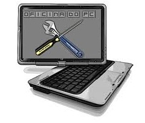

Soluções em Informática & Serviços
Atende Este
Segmento De Serviço Por Meio De:
MANUTENÇÃO DE MICRO
COMPUTADOR & NOTEBOOK
Paulo C Ferreira
(31) 3586-7512 OU (31) 9260-3010
assistenciabh@gmail.com

Belo Horizonte - MG
Manutencao de computador notebook e laptop, assistencia tecnica de micros computadorores, notebooks e laptops; Instalacao do windows office e softwares desenvolvimento de redes convencionais ou sem fio; configuracao de roteadores a cabo ou sem fio; recuperacao de dados perdidos, em HD, CD, DVD, ou qualquer tipo de mídia eletronica; retirada de virus e imunizacao do sistema atraves de antivirus; implementacao de rotinas de backup; implantacao, manutencao e atualizacao de sistemas operacional; soluções e serviços em informatica.
Manutencao de computador notebook e laptop, assistencia tecnica de micros computadorores, notebooks e laptops; Instalacao do windows office e softwares desenvolvimento de redes convencionais ou sem fio; configuracao de roteadores a cabo ou sem fio; recuperacao de dados perdidos, em HD, CD, DVD, ou qualquer tipo de mídia eletronica; retirada de virus e imunizacao do sistema atraves de antivirus; implementacao de rotinas de backup; implantacao, manutencao e atualizacao de sistemas operacional; soluções e serviços em informatica.
Especializados em Manutenção e Configuração de Micro
Trabalhamos com manutenção e configuração de micro computador, notebook , instalação de sistemas microsoft windows ou mac osx da mackintosh, desenvolvimento de redes convencionais ou sem fio (wireless) redes cabeadas, configuração de roteadores wireless, modems ads, cabo modem.
Recuperação de dados em HD ou qualquer midia eletronica, atualização de sistema operacional, implementacao de rotinas de backup.